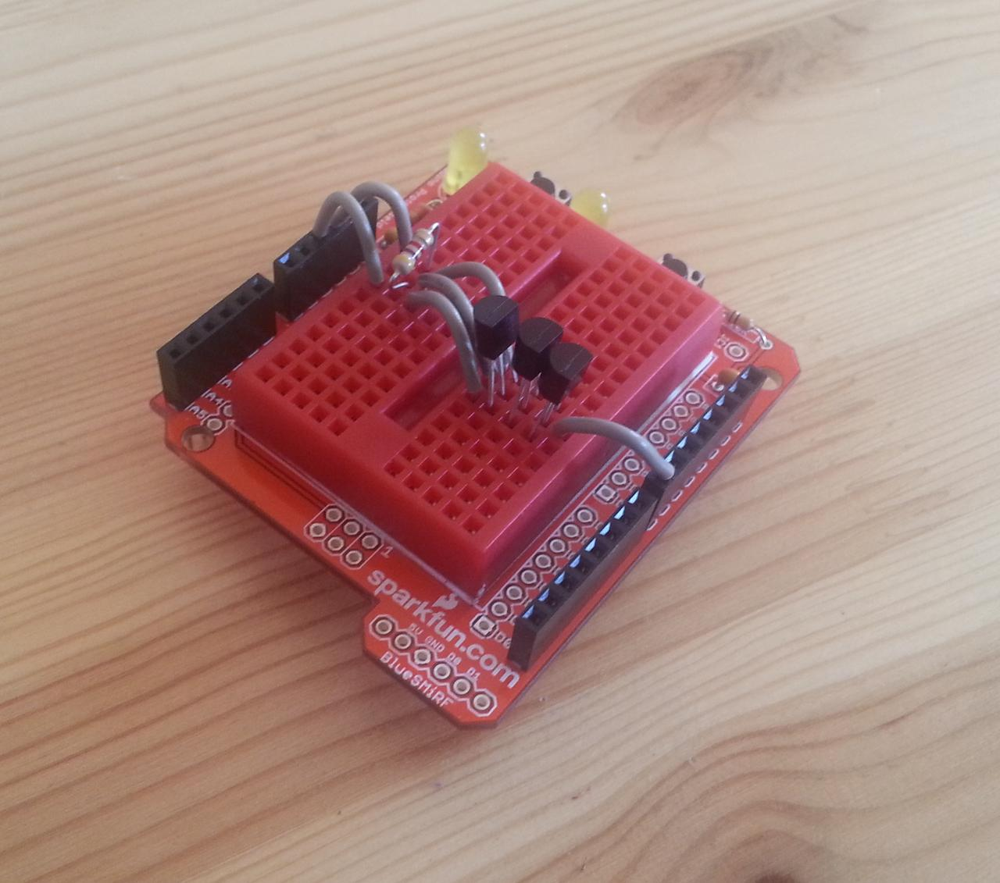

Temperature sensors working
Temperature sensing using digital temperature sensors is easy to get working.
The temperature sensing part of the project requires three sensors for ambient, high-up and low-down measurement. The DS18B20 temperature sensor seems well-suited for the job.

Three DS18B20 temperature sensors sharing a OneWire bus, standard (rail) power mode
Hooking-up a OneWire bus for the three sensors lets them share a single microcontroller pin -- which isn't important for hardware reasons in this project, but also saves some microcontroller RAM, which might be. The circuit is very simple, with the three sensors sharing power and ground lines and with a common data line pulled-up to the power rail through a 4.7K resistor. The DQ line is attached to one of the Arduino's digital lines. The OneWire library is then used to instantiate a protocol handler for that line, and passed to the temperature control library to manage the interaction with the devices, including their conversion from raw to "real" temperature values.
The resulting code is almost comically simple:
#include <DallasTemperature.h>
OneWire onewire(8); // OneWire bus on pin 8
DallasTemperature sensors(&onewire);
void setup(void) {
Serial.begin(9600);
sensors.begin();
}
void loop(void) {
sensors.requestTemperatures();
for(int i = 0; i < 3; i++) {
float c - sensors.getTempCByIndex(i);
Serial.print("Sensor "); Serial.print(i); Serial.print(" = ");
Serial.print(c); Serial.println("C");
}
delay(5000);
}
That's it! The temperature library packages everything up nicely, including the conversion and the interaction with the OneWire protocol (which is quite fiddly).

One potential problem for the future is that access to the sensors is by index, not by any particular identifier, and it;s not clear whether the ordering is always the same: does the sensor closest to the microcontroller always appear as index 0, for example? If not, then we'll have to identify which sensor is which somehow to sample the temperature from the correct place, or run each one on a different OneWire bus instance.
There's also an interesting point about parasite power mode, which is where the DS18B20 draws its power from the data bus rather than from a dedicated power rail. This might make power management easier, since the sensor would be unpowered when not being used, such as when the Arduino is asleep. This suggests it's probably worth looking into parasite power a bit more.